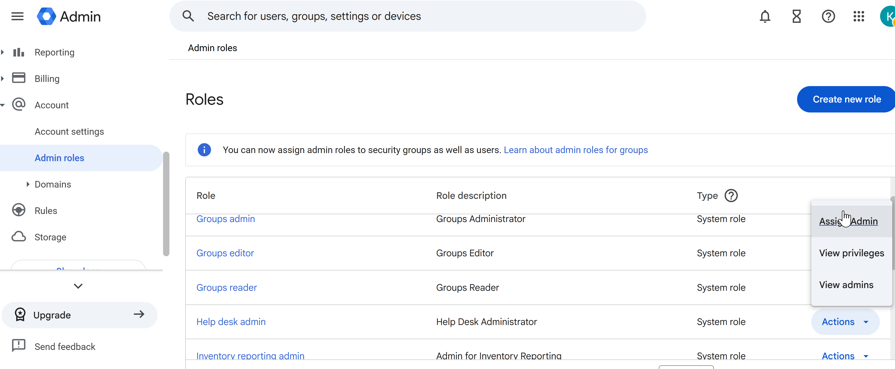
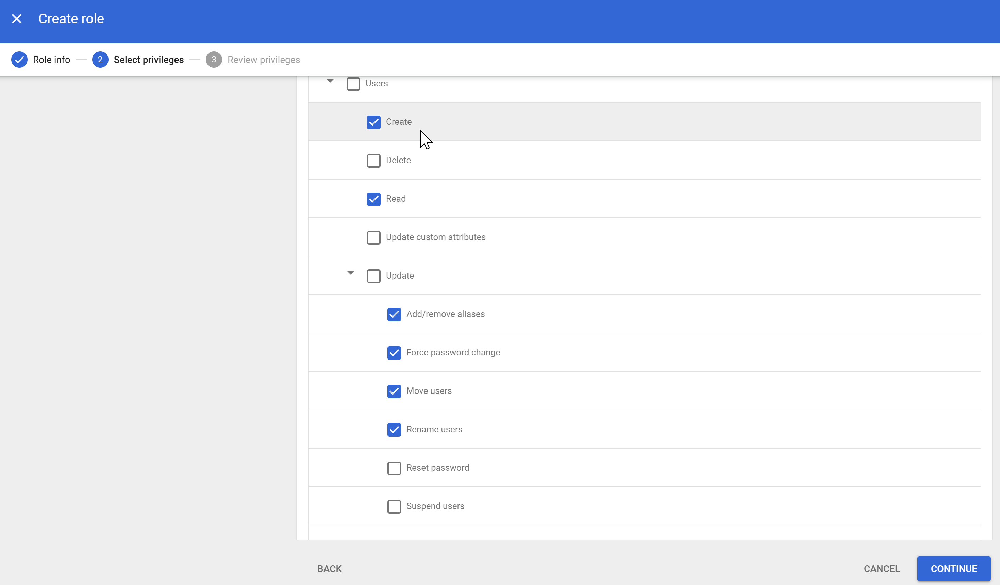

Overview
This section demonstrates how administrative roles were used to distribute responsibilities across the organisation while maintaining strict security controls.
Instead of granting full administrative access, roles were assigned based on job function, ensuring users only receive the permissions required to perform their tasks.
Least privilege reduces risk by limiting access to only what is required.
Purpose of Admin Roles
- Delegate administrative tasks without granting full access
- Reduce security risk by limiting high-level permissions
- Support scalable management as the organisation grows
Admin Roles Overview

Available administrative roles within Google Workspace
Predefined system roles include:
- Super Admin
- Help Desk Admin
- Groups Admin
- Reports Admin
These roles provide granular control over administrative capabilities.
Role Assignment

Example of assigning the Help Desk Admin role
Roles were assigned to users based on their responsibilities within the organisation.
- Access aligned with job function
- Responsibilities clearly defined
- Full admin access restricted
Helpdesk Role (Least Privilege Example)

Help Desk Admin privileges showing limited access scope
The Help Desk Admin role was used to support users while restricting access to sensitive configuration settings.
- View organisational units
- View users
- Reset passwords
Support staff can resolve user issues without risking exposure of critical system settings.
Super Admin Control

Super Admin accounts with full administrative control
The Super Admin role provides full control over the environment.
Best Practices Applied
- Assigned to a minimal number of trusted users
- Used only for high-level configuration
- Not used for daily operations
Custom Role (Advanced Delegation)

Custom role configuration with selected privileges
A custom role was created: User Provisioning Admin
This role was designed to separate onboarding tasks from user support.
- Create and manage user accounts
- Handle onboarding processes
- Exclude password reset permissions
Custom Role Assignment

Custom role assigned to a designated administrator
The custom role was assigned to a specific user responsible for onboarding tasks.
- Clear separation of responsibilities
- Reduced privilege overlap
- Improved auditability
Delegation Model
- Super Admins – Full control, limited to trusted users
- Helpdesk Admins – User support only
- User Provisioning Admin – Account creation without password control
Security Design
- Principle of least privilege
- Separation of duties
- Reduced attack surface
- Controlled access to sensitive functions
Integration with Groups
Admin roles can also be assigned to groups, enabling:
- Centralised role management
- Automatic permission updates as users join/leave
- Consistent access control
Summary
- Delegated administrative responsibilities securely
- Used predefined and custom roles
- Applied least privilege principles
- Separated high-risk and operational tasks